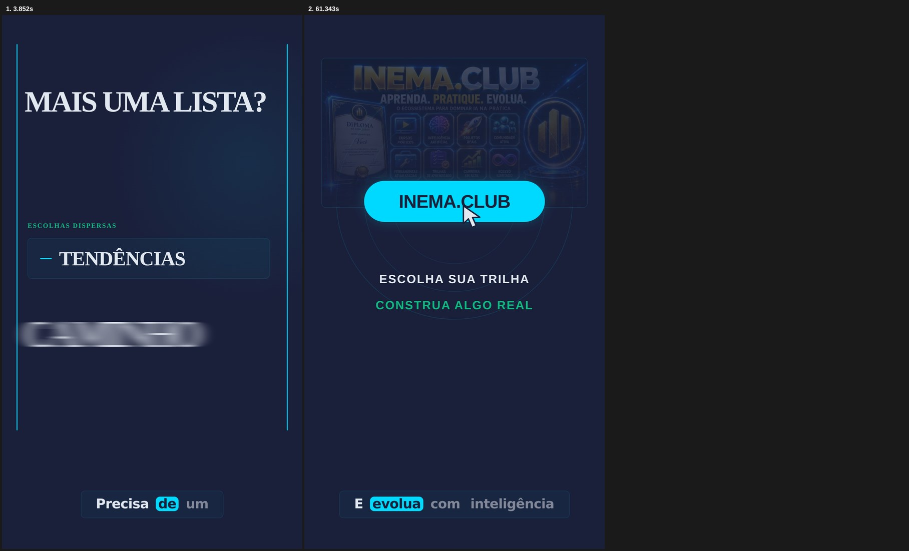
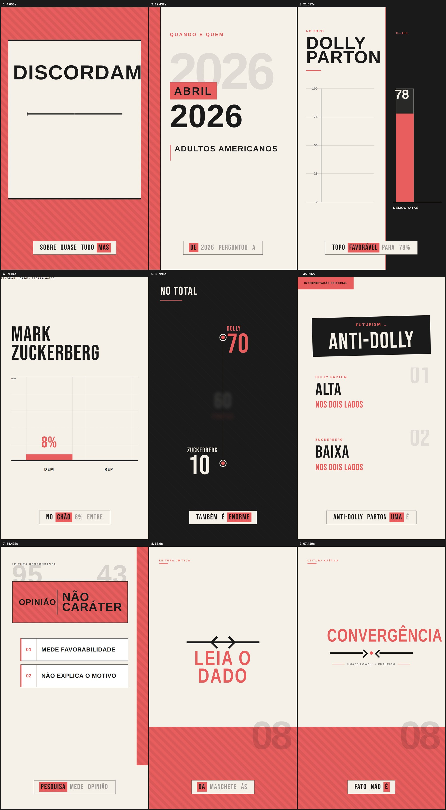

Transforme páginas e artigos em vídeos verticais editáveis, narrados em português e prontos para revisão antes do render.
A IA pesquisa a fonte e monta a produção. Você mantém o controle editorial, abre cada composição e decide quando gerar o arquivo final.
Cole uma URL na interface ou passe-a pelo terminal. O sistema cria um projeto local em output/content2video/.
Roteiro, storyboard, voz, legendas, cenas, mídia e tempos permanecem acessíveis no HyperFrames Studio.
O MP4 só é gerado depois da validação, com um botão na interface ou um comando no terminal.
O padrão preserva a mesma voz pt-BR até quando a fonte original estiver em outro idioma.
Use o OAuth da assinatura pelo Codex CLI, que é o padrão, ou configure uma chave de API somente no .env.
Executa a interface e o CLI.
node --version
Reutiliza o login OAuth local.
codex login codex login status
Codifica e inspeciona o vídeo final.
ffmpeg -version
Nos dois modos, os padrões vêm do .env: 60 segundos, tolerância de 30%, nota 8, voz Francisca e vídeo 9:16.
Clone o projeto e crie sua configuração local.
git clone https://github.com/inematds/content2video.git
cd content2video
cp .env.example .env
npm installAjuste os IPs do .env se necessário e abra o endereço exibido.
npm start # padrão: http://192.168.2.99:3080
O slug opcional define o nome da pasta do vídeo.
npm run video:create -- https://www.inema.club/ inema-club-promoAbra o editor ou rode a checagem automática.
npm run video:preview -- inema-club-promo
npm run video:check -- inema-club-promoO arquivo final vai para output/content2video/<slug>/renders/<slug>.mp4.
npm run video:render -- inema-club-promoA produção local reúne um institucional do INEMA.club, um artigo em inglês narrado em pt-BR e o MVP original.


A base operacional está pronta para teste em rede local.